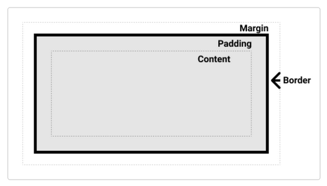

_ 文系大学生のための_HTML_CSS入門 _ https://zenn.dev/ojk/books/intro-to-html-css/viewer/web-basic
以下は、上記サイトを なぞって 記録 ・ウェブページ
< hr >で、色付き区切り線は領域設定 style設定hr{ background-color:... height: 12px;...}
リンク url 文系大学生のための_HTML_CSS入門
・・黒丸で順序なしリスト要素 ul・li、
・・説明リスト要素 dl・dt・dd、
・・番号などで順序付きリスト要素 ol・li、
| 11 | 12 | 13 |
|---|---|---|
| 21 | 22 | 23 |
< table > に、< table style="float: left;" > 記入で、文章は、表に回り込み
表の枠線は、table要素のstyleに、 全枠線 table { border-collapse: collapse; }
外枠線 td, th { border-style: solid; } の順に設定で、一重線
この部分の要素に、例えば < p style="clear:both;" > で、回り込み解除
coffe cup
< figure > 要素は、自己完結型コンテンツを、本文から、段落で、切り離すが、テキストの一部として、インラインで配置
main 要素は、WEB検索エンジン用に、メイン部分作成、ウェブページ内原則ひとつ
コンテナー（入れ物）要素
div 要素は、フローコンテンツのコンテナー・コンテンツ区分要素で、
css の、任意のスタイル「A」を適用するために、「A」の適用対象の、要素を集め、グループ化するのに使用
span 要素は、記述コンテンツの、行内コンテナー、改行なしで右に並ぶ要素の、
一部分の名前付けに使用し、名前を指定で_css_に記述、に使用
HTML、HyperText Markup Language、文・文の構造を、要素で記述
CSS、Cascading Style Sheets、スタイルシート、HTMLの要素の色やサイズなどの、スタイルを記述
CSSの記述方法、cssスタイルの優先順位は、1,2,3の順
css、html要素の適用は“詳細度” 1,2,3の順で優先
スタイルの記述形式、セレクター はスタイルを適用する対象（部分）を選択する部分 cssの記法図.png
セレクター、優先順位 1,ID セレクター … id 名での指定 2,クラスセレクター … class 名での指定 3,要素型セレクター … 要素名での指定
セレクターのあいだを 半角スペース で区切ると、要素の子孫要素、を選択 、p要素のclass="abc"は、半角スペースで列記 ⇒ p .abc { background-color: red; }
コンマ（,）で、列挙のセレクターに適用、h2要素、h4要素に設定 ⇒ h2, h4 { border: solid black; }
コンテナー（入れ物）要素の、span 要素は、
記述コンテンツの、行内コンテナー、改行なしで、
右に並ぶ要素の、一部分の名前付けに使用し、
名前指定で_css_にスタイル記述、に使用される。
上記の、span 要素を装う、疑似要素 とは、
スタイルを適用したい部分を、
「span 要素で囲われた部分」のように、扱う、セレクターの表現、
テキストの一部を、疑似的に span 要素で囲んだ、かのように、扱う、
::first-letter ::first-line ::selection
::first-letter 、テキストの 1 文字目を、「span 要素で囲んだ」かのような、セレクターとして機能
::first-line 1 行目を疑似要素化、ブラウザー（親要素）の幅を変更して、1 行目の範囲が変わっても、追従
（これは span 要素では対応できません）
::selection は、ユーザーがマウス等で選択したテキストを span 要素で囲んだかのようなセレクターとして機能
（ブラウザーのデフォルトスタイルは上書き）
例、 class要素fakespan1 の1行目を選択 .fakespan1::first-line { background-color: lightblue; }
HTML の要素は、ボックス（矩形の領域）・区分レイヤーで構成、CSS では、ボックスモデルとして操作、  content コンテント padding パディング 内側の余白 border ボーダー 境界線 margin マージン 外側の余白
p_1
p_2
静的位置指定（static）スタイルの指定 position: static;
静的位置指定、position プロパティの指定なし要素は、static・スタティックな位置・既定位置に配置される
相対位置指定（relative）スタイルの指定 position: relative;
スタティック既定位置から、動かしたい要素の position プロパティを、オフセットで位置を指定
オフセット プロパティ指定、top／bottom／left／right
例 .sample{ position:relative; top:30px; left:50px;}
絶対位置指定（absolute）基準となる、HTML要素・Aを指定し、要素・Aの位置に対するオフセットで要素・Bの位置を指定
手順1、位置指定したい要素・Bの、先祖要素・Aを基準の要素に選び、 例 .sample1{position:relative;}
・先祖要素・Aには、オフセットを指定しない、既定に配置
手順2、移動対象の要素・B、 position:absolute;
・オフセット プロパティ指定、top／bottom／left／right
、例 .sample2{ position:absolute; top:30px; left:50px;}
| 位置 | 基準 | プロパティ値 | 相対 | その要素の静的位置 | relative | 絶対 | relativeな先祖要素 | absolute | 固定 | ビューポート | fixed | 粘着 | 静的位置→ビューポート | sticky |
|---|
< table > に、< table style="float: right;"> 記入
ーーー
display プロパティを使わずに、通常フローから、外れる方法 float プロパティ
フロート float プロパティ 浮動要素 floating element は、ビューポートの大きさで、画像への、テキストの、回り込む分量が、変る
img要素やtable要素に、float プロパティの値,left,right 設定
フロートの効果は、float プロパティを適用した要素から、以後の要素、すべてに作用
フロートの回り込みを解除は、解除する箇所の要素に、clearプロパティで、値 both を指定し、回り込み解除
例、フロートの回り込み、設定要素imgに、img{ float:right;} 、フロートの回り込み、解除要素pに、p{ clear:both;}
回り込みを、解除する要素に、例えば、 < p >に、< p { clear:both;} > を指定し、回り込みフロート解除